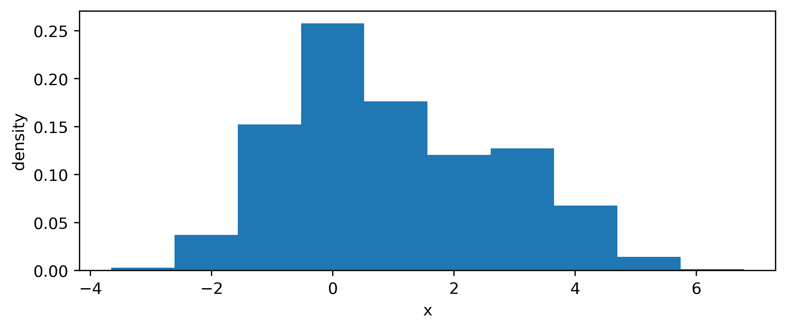
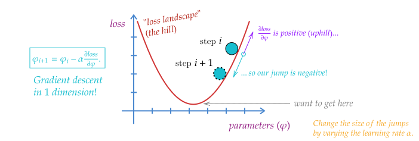
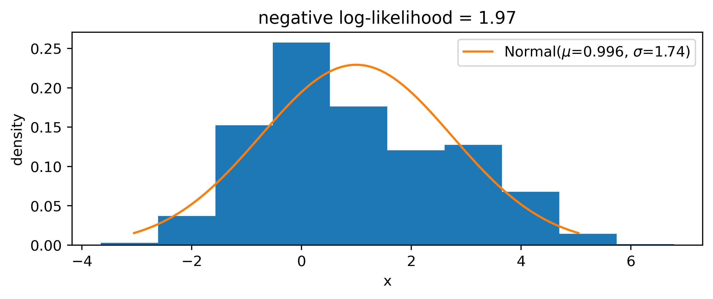

4 Gradient descent
4.1 Introduction
Moving forward with the groundwork from the previous section on automatic differentiation, we’ll dive into how this enables a particular learning procedure called gradient descent. We’ll explore what that means, then apply this to a few different scenarios to demonstrate its utility, along with highlighting some more intelligent versions that have arisen as a by-product of the recent deep learning revolution. Importantly, this will also set the stage to show the main mechanism for how neural networks are able to train.
Say we have a ball on a hill, and we wanted to roll it down. How would you go about this task? Well, I imagine you’d probably just give it some initial kick, and then let gravity do the rest. Alright then – let’s take away gravity. What then? Look for the bottom of the hill and try to push it there? But what if you can’t see the hill itself? This is the situation we find ourself in when trying to optimize a workflow. We’re able to see what point we’re at during optimization, but we don’t know where the bottom of the hill is (minimum of our objective), or what the surrounding landscape looks like (could be very expensive to scan over the space).
Ah, but here’s a trick: if we can see where we are at one point on the hill, we can determine the way the slope goes that we’re standing on. If the slope points up, we’ll want to push the ball in the opposite direction to go down. Then, we’re guaranteed to at least get nearer the bottom of the hill. But by how much do we push the ball?
If the ball is close to the bottom of the hill, you could imagine that the ground starts getting flatter, which would make the magnitude of the slope less. Likewise, if the slope is steep, we know we’re probably not at the bottom yet, so we should move a reasonable amount. We can then just move proportionally to the magnitude of the slope.
To write this out in equation form: given the horizontal position on the hill \(x_i\), and the vertical position \(y_i\), we propose to move to a new point \(x_{i+1}\) in proportion to the slope at the point that we’re on, i.e.
\[ x_{i+1} = x_i - \alpha \frac{\Delta y_i}{\Delta x_i}~, \]
where \(\alpha\) is the constant of proportionality that we’re free to choose (also called the learning rate, since it modifies the step size we take), and \(\Delta\) is a small change that we assume we can calculate. Take note of the minus sign – this is us trying to move in the opposite direction to the slope at \(x_i\).
Instead of assuming we can numerically calculate the small change \(\Delta\), we actually already have a way to calculate a small change at a point from calculus: the derivative! So if we take \(y\) as a function of \(x\), then we can replace the deltas with the gradient of \(y(x)\) evaluated at our current point \(x_i\), leaving us with
\[ x_{i+1} = x_i - \alpha \frac{\partial y(x_i)}{\partial x_i}~. \tag{4.1}\]
Equation 4.2 is the equation for gradient descent, and is probably the most important equation in the whole thesis, since it enables all of the downstream applications I’ll talk about later. It’s also the mechanism that enables most artificial intelligence systems to learn.
To reframe this equation one more time through the lens of optimization: given an objective function or loss function \(L\) with parameters \(\varphi\) that defines a goal relative to data \(d\) (so \(L=L(\varphi, x)\)), we can use gradient descent to update the parameters \(\varphi\) such that we minimize the objective evaluated at \(d\):
\[ \varphi_{i+1} = \varphi_i - \alpha \frac{\partial L(\varphi_i, d)}{\partial \varphi_i}~. \tag{4.2}\]
See a pictorial demonstration of this rule in Figure 4.1.

We’re now specifying the data \(d\) because we want to give meaning to the vertical position in the hill: it’s some quantity that’s assessing the quality of our workflow with respect to some data from the real world \(d\), given that we’re using parameters \(\varphi_i\). In practice this may be a small subset of the dataset that we draw at random, since we can’t computationally do this update on the whole data set due to memory restrictions on the device we run this on.
A key point to highlight: this mechanism only works if \(L\) is differentiable with respect to \(\varphi\), otherwise we won’t be able to calculate its gradient. This restriction may look tame for common objectives, which tend to involve simple algebraic expressions involving the output of a neural network, which is already a differentiable function. However, if we want to add domain knowledge to our loss function, we may end up discovering that not everything we want to calculate has a well-defined gradient. There are various ways to get around this, including the use of surrogate operations that are relaxed (jargon for differentiable) versions of their non-differentiable counterparts. We’ll look at this in more detail when we study applications of this nature.
Let’s look at an example of gradient descent in action.
4.1.1 Example: maximum likelihood estimation
Say we have some example data drawn from a bi-modal probability distribution that’s somewhat normal-looking, like in Figure 4.2. We may want to try and model this with a normal distribution, but how do we choose the parameters? We can fit them to the data using maximum likelihood estimation, discussed further in Section 2.3.1. The basic idea is that, given a probability distribution \(p\) with parameters \(\mu\), we want to calculate \[ \hat{\mu} = \underset{\mu}{\mathrm{argmin}} (-2\ln p(x|\mu))~,\]
given some observed data \(x\). In other words, we want to find the value of \(\mu\) such that we minimize the negative log-likelihood. We can do this via gradient descent!
Using the update rule in Equation 4.2 with \(L\) as the negative log-likelihood and \((\mu, \sigma)\) playing the role of \(\varphi\), we can run gradient descent for some number of steps until we reach a result that converges within some tolerance. We’ll have to pick some initial value to start for each parameter – here we use 1 for each. In the implementation, we’re using the automatic differentiation framework JAX (Bradbury et al. (2018)) to calculate the gradient of the objective (online viewers can expand the code block above the figure to see the details). This gives us a result in Figure 4.3, which isn’t particularly great in my opinion.

Pretending we didn’t know that the data came from a mixture of normal distributions, we can make a more sophisticated model, e.g.
\[ p(x |\mu_1, \sigma_1, \mu_2, \sigma_2) = \frac{1}{2}\mathrm{Normal}(\mu_1, \sigma_1) + \frac{1}{2}\mathrm{Normal}(\mu_2, \sigma_2)~. \]
We can then simultaneously optimize \(\mu_1, \sigma_1, \mu_2, \sigma_2\) in exactly the same way, with no modification to the procedure other than using the new likelihood as the loss function. Doing this yields the distribution in Figure 4.4. We can tell that the shape of the distribution is represented better here, which is also indicated by the lower negative log-likelihood than in the case of the single normal distribution. Since we forced the proportions of the mixture to be half and half, the lower second peak is modelled through a wider normal distribution to match the height of the second, smaller mode.
Interestingly, if we use 1 as the init for every parameter, we recover the solution from Figure 4.3, so we have to make sure there’s a little mutual variation in the starting values so that the gradients push the different \(\mu\) and \(\sigma\) values from different positions, allowing the second mode to be discovered. This demonstrates the behavior of gradient descent to move to some local minimum of the objective, and won’t always converge to something optimal or intuitive.
4.2 Mini-batching and stochastic gradients
In reality, we’re not generally able to update our parameters using gradients computed over all our data at once in one batch, since that data may not fit on the device we’re using to compute the program. We’d like to do this if we truly want to calculate the expectation of the gradient (in practice, the empirical mean) across all the training data we have, which has some convergence guarantees for arriving at a local minimum. Instead, we often split our data up into minibatches, which are fixed-size partitions of the data, typically randomly selected1. When we have seen enough batches such that we cover all the available training data, that number of steps is known as an epoch. This gives rise to the notion of the batch size – the size of each partition – which then inherently decides how many steps an epoch will take (smaller batch size = more steps and vice-versa).
An extreme version of splitting up into batches is stochastic gradient descent, which is just setting the batch size to 1. Gradients computed in this way will have very high variance as the name suggests, since parameter updates would be based on the performance on each individual training example. Surprisingly though, this high variance of the gradients can often help when wanting to explore the loss landscape more, and may help in jumping to new local minima that batch gradient descent may ignore.
4.3 Speeding up convergence: different optimizer types
To improve upon the rate of convergence in minibatch gradient descent, several variants have been proposed that incorporate additional information to make the gradient update. The methods are generally referred to as optimizers – we’ll cover just a couple of the more common ones here.
4.3.1 Momentum
What happens when we’re in a ravine during optimization, i.e. a local minimum with two steep slopes on either side in one dimension? Without modification, gradient descent will typically bounce between the ravines: we’re moving in the downward direction, and with a larger step size since the slope is steep. How may we help this converge easier? Well, we could of course modify the learning rate in an adaptive fashion to try to dampen this oscillation about a minimum in a ravine. Something else that is done is to incorporate some amount (\(\gamma\)) of the previous update step, which we can write with a modified update rule through a placeholder variable \(v\), defined recursively:
\[ v_{i} = \gamma v_{i-1} + \alpha \frac{\partial L(\varphi_i, d)}{\partial \varphi_i};~~~ \varphi_{i+1} = \varphi_i - v_i~. \]
To give some intuition as to what’s happening here, we note that there’s still a standard gradient update rule in there, but we’re also “speeding up” the update by an amount \(\gamma v_{i-1}\), meaning if we did a large update previously, then we’ll go even further this time. The analogy here is really still a ball rolling down a hill, but we’re compounding speed just like gravity would make us do in real life. Moreover, if the previous update had a different sign for the gradient (travelling in the opposite direction), we’ll actually be slowed by \(\gamma v_{i-1}\), which will prevent these types of oscillating situations bouncing between two steep slopes. This is termed gradient descent with momentum; I don’t know if this was where it was originally proposed, but many seem to cite (Qian 1999), despite it opening with “A momentum term is usually used in…”.
4.3.2 Adagrad
We return to the idea of adaptive learning rates. In the multi-dimensional parameter setting (could even be billions if we’re looking at neural networks), some parameters will have higher importance than others, i.e. the loss landscape could be flat in some dimensions, and convex in others. However, there could be parameters that are locally flat in some region, but have more interesting structure at a distance far from that region, or perhaps at least have structure that is more widely spread out. This could happen if that parameter is responsible for information relating to a sparse feature, for instance. If the learning rate makes the stepsize small in comparison to this distance, then we’ll never explore that structure well. This then gives rise to the notion of adapting the learning rate on a per-parameter basis to aid more efficient exploration of the loss landscape in search of a local minimum.
Adagrad (shorthand for “adaptive gradient”) is a method that endeavors to tackle this issue. It scales the learning rate for each parameter in such a way as to increase the step size for parameters in which we have moved less, and decrease it for those in which we have moved more. Specifically, it scales the learning rate by the inverse of the sum of the (squared) gradients. Denoting the gradient of one example parameter \(\varphi^{(1)}\) at step \(i\) as \(g^{(1)}_{i}\), we can write the update step for that parameter as
\[ \varphi^{(1)}_{i+1} = \varphi^{(1)}_{i} + \Delta\varphi_i^{(1)};~~~ \Delta\varphi_{i}^{(1)} = - \frac{\alpha}{\sqrt{\sum^{i}_{j=0}\left(g^{(1)}_{j}\right)^2 + \epsilon}} g^{(1)}_{i} ~, \]
where \(\epsilon\) is a very small number just to prevent dividing by zero. We’ve defined the convenient notation of \(\Delta\varphi\), which becomes the subject of modification for the methods hereafter. For \(n\) parameters, we denote \(g_{i}\) as the vector of all gradients \([g^{(1)}_{i}, \dots, g^{(n)}_{i}]\). Then, if we treat all the operations as elementwise, i.e. as one may expect with numpy arrays, we can write this again more compactly for all parameters \(\varphi\) as
\[ \varphi_{i+1} = \varphi_{i} + \Delta \varphi_i ;~~~ \Delta\varphi_i = - \frac{\alpha}{\sqrt{\sum^{i}_{j=0}g^2_{j} + \epsilon}} g_{i} ~. \]
One of the main reasons for the appeal in Adagrad is that you don’t really need to tune the scalar learning rate \(\alpha\) from it’s initial value, since it’s being done on-the-fly for each parameter. However, an issue arises in that the sum \(\sum^{i}_{j=0}g^2_{j}\) is one of positive numbers, and shall grow without bound, which will eventually reduce the learning rate to a crawl and stop learning altogether. Avoiding this is the groundwork for our next optimizers: Adadelta and RMSProp.
4.3.3 Adadelta/RMSProp
As mentioned, tackling the growing sum of squared gradients is the purpose behind Adadelta (Zeiler 2012) and RMSProp (Hinton 2018), where we’ll start with the former.
Instead of maintaining a sum over the gradients \(g_i^2\) up to step \(i\), we recursively define a decaying average \(E\left[g^2\right]_i\):
\[ E\left[g^2\right]_i=\gamma E\left[g^2\right]_{i-1}+(1-\gamma) g_i^2~, \]
where we proportionally weight the previous average and the current squared gradient, each by a factor of \(\gamma\) and \(1-\gamma\) respectively. This is a similar idea to momentum: we’re “remembering” the previous steps in some manner that we can tune numerically through \(\gamma\). This leads to a \(\Delta \varphi_i\) of
\[ \Delta \varphi_i = - \frac{\alpha}{\sqrt{E\left[g^2\right]_i+ \epsilon}} g_{i} ~. \tag{4.3}\]
Coincidentally, this is actually the equation for the RMSProp update, developed independently from Adadelta around the same time! For Adadelta though, we’re not quite done yet though; the Adadelta authors noted that this update of \(\Delta \varphi_i\) – just like the update in any of the methods above – does not have the same units as the parameters (it’s instead dimensionless), which is not in principle an issue, but maybe better behaviour could be had by updating by a quantity of the same scale as the parameters themselves. This led to defining a second decaying average using the definition of Equation 4.3 for \(\Delta \varphi_i\), which we’ll also define recursively:
\[ E\left[\Delta \varphi^2\right]_i=\gamma E\left[\Delta \varphi^2\right]_{i-1}+(1-\gamma) \Delta \varphi_i^2 ~. \]
This expression is then also put under a square root with the same small \(\epsilon\), and we use this in place of the static learning rate \(\alpha\), i.e. replace it with \(\sqrt{E\left[\Delta \varphi^2\right]_i + \epsilon}\). At least, we’d like to – this would lead to some kind of nested recursion relation between \(E\left[\Delta \varphi^2\right]_i\) and \(\Delta \varphi_i\), so we need to instead need to approximate this with a value we have access to. The paper does this with the value from the previous iteration: \(E\left[\Delta \varphi^2\right]_{i-1}\). This at last gives us the full relation for one Adadelta update:
\[ \Delta \varphi_i = - \frac{\sqrt{E\left[\Delta \varphi^2\right]_{i-1} + \epsilon}}{\sqrt{E\left[g^2\right]_i+ \epsilon}} g_{i} ~. \tag{4.4}\]
A curious thing to note in Equation 4.4 is the lack of \(\alpha\) – we’ve removed the scalar learning rate altogether, and instead only need to specify the decay factor \(\gamma\) before undergoing optimization.
4.3.4 Adam
We’ve reached Adam (Kingma and Ba 2014): by far the most common default choice of optimizer for deep learning, and the one frequently used within this thesis. Adam draws upon ideas from all of the above methods; it keeps track of both a decaying average of gradients and squared gradients. We can write their forms explicitly:
\[ \begin{aligned} m_i &=\beta_1 m_{i-1}+\left(1-\beta_1\right) g_i \\ v_i &=\beta_2 v_{i-1}+\left(1-\beta_2\right) g_i^2~, \end{aligned} \] where we’ve introduced separate decay factors \(\beta_1\) and \(\beta_2\) for each quantity. If you remember earlier, we were using \(E[g]_i\) notation for these types of quantities, and that’s not a coincidence – they’re moving averages, and so are Monte Carlo estimations of expectation values (albeit off by decay terms etc). Specifically, \(m_i\) and \(v_i\) are estimators of the first moment (mean) and second moment (variance) of the gradients \(g_i\), hence their variable names, and the name of Adam (adaptive moment estimation).
One thing the Adam authors note is the fact that they used the algorithm through initializing \(m_i\) and \(v_i\) as vectors of zeroes, and then found that the resulting estimates of the gradient moments were biased towards zero. The paper includes a brief derivation of the actual value of these moments, and shows that in either case of \(m_i\) or \(v_i\), you can correct for this bias by dividing through by \((1-\beta^i)\), where we explicitly raise \(\beta\) to the power of the iteration number \(i\) (the paper uses \(t\) instead). This results in the bias-corrected version of the previous formula: \[ \begin{aligned} \hat{m}_i &=\frac{m_i}{1-\beta_1^i} \\ \hat{v}_i &=\frac{v_i}{1-\beta_2^i}~. \end{aligned} \] We then use these bias-corrected moment estimates to construct an expression for the Adam update, which looks a lot like that for RMSProp in Equation 4.3:
\[ \Delta \varphi_i = - \frac{\alpha}{\sqrt{\hat{v}_i}+ \epsilon} \hat{m}_{i} ~. \]
As you can see, gradient descent can get pretty complicated! The reason I went through this explicitly was to show that gradient descent has been extremely well-studied during the rise of deep learning, and we often need to go beyond simple update rules in order to effectively learn the properties we want from our parameters in practice. In fact, the main work you’ll see in the first application later on initially wouldn’t learn at all until we switched to using Adam!
There’s a funny issue to do with the notion of randomly selecting here; if we select with replacement, then we’re sampling i.i.d. uniform random variables. This makes the theory of analyzing the performance much neater. But in practice, we never do this, and just shuffle the data and stream it, making it non-i.i.d, and therefore more difficult to analyze.↩︎